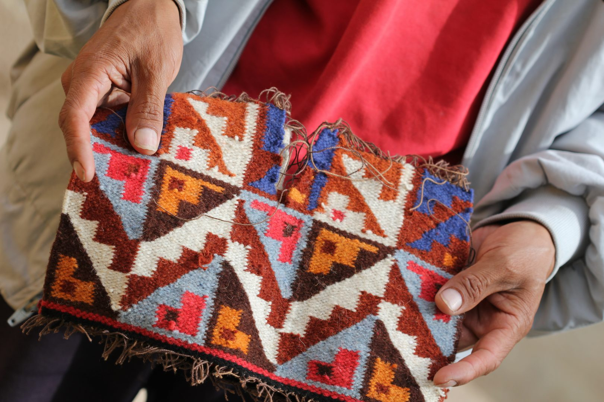

Si se tuviera que resumir al Perú en un tejido, resultaría imposible.
Y es que la textilería es una de las mayores manifestaciones culturales
que atesora este país con una larga historia que nace en la época preínca
y que se preserva hasta la actualidad, siendo reconocida en todo el mundo.
Se trata, sin duda, de un notable trabajo artístico lleno de estilos y diseños
que no solo impresiona por su gran belleza, sino que también se ha convertido
en un sello de identidad y tradición. A continuación, conoce más sobre los antiguos
procesos y técnicas empleados en la fabricación y producción de estos maravillosos
telares, y descubre sus máximos exponentes a través de los años.
El arte textil ha tenido un rol protagónico en la cultura del Perú desde sus inicios.
Desde las primeras civilizaciones, el uso del algodón y las fibras ha estado presente
en la vida cotidiana de los antiguos peruanos. Muestra de ello, es la Huaca Prieta -sitio
arqueológico que data del 2500 a. C.-, ubicada en la región de La Libertad, donde fueron
hallados más de tres mil fragmentos de tejidos, en su mayoría de fibra de algodón.
En los telares se puede observar figuras de animales como cóndores, serpientes y felinos,
que posteriormente fueron representadas también por otras culturas preíncas.
El descubrimiento de este importante complejo es considerado un hito trascendental no solo
para la arqueología peruana sino también para el resto del continente, pues permitió
obtener mayor información sobre el período Precerámico y de sus habitantes.
Las técnicas y procedimientos de los antiguos peruanos fueron adaptados por las culturas
preíncas Wari y Paracas, que encontraron en el arte textil una original forma de expresión.
La primera, que floreció en el centro de los Andes peruanos durante los siglos
VII y XIII d. C., es reconocida por sus hermosos tapices que se encuentran entre los
textiles más finos del mundo. Su excepcional calidad no solo reside en su belleza estética,
sino también en el contenido iconográfico.
Los paracas (700 a. C. - 200 a. C.) también practicaron una textilería de alta calidad,
en lana y algodón, que se evidencia en los emblemáticos fardos funerarios -telares que
utilizaban para envolver cadáveres- encontrados en la región de Ica y cuyos diseños
representaban seres míticos y motivos simbólicos, usualmente de manera geométrica.
Los tocapus son cuadrángulos con signos geométricos o figurativos estilizados que aparecen en forma de series en los tejidos y vasos ceremoniales del periodo inca y de los inicios del periodo colonial. Varias interpretaciones han sido propuestas para explicar su posible significado, pero ninguna convincente a la fecha.
 Algunas investigaciones señalan que fueron sistemas de escritura de los incas. A pesar que siempre
se ha dicho que los incas no tuvieron escritura.
Victoria de la Jara (1964-1967): Llamó tocapu o tocapo a cada uno de aquellos signos cuadrados
y creía que se trató de un sistema de escritura incaica. De la Jara identificó 294 tocapus incaicos.
Burns Glynn (1981): Sugirió que los tocapus en realidad son fonemas gráficos. Cada tocapu representa un sonido que unido forma un sistema de escritura alfabética.
Tom Zuidema (1982): Los tocapus incaicos son símbolos heráldicos (escudos nobiliarios) que representaron a grupos sociales en el Tahuantinsuyo.
Hola, soy Sebastian La Rosa. creador de esta creativa página web y enamorado de los buenos momentos;
siempre he pensado que el límite no existe, me he permitido soñar y gracias a creer en mí, he logrado
impactar e inspirar a otros.
Creo en el buen diseño y las grandes ideas, y sobre todo en las que nacen del corazón, porque emprender
es un camino guiado por la pasión de cada soñador; creo que se puede vivir haciendo lo que te gusta,
porque la competencia no existe, porque considero que hay oportunidades para todos.
Webmaster y capaz de mantener la calma cuando el internet hace de las suyas; es quien me ha ayudado
a migrar muchos sueños a la era digital.
No hay reto que le quede grande, el siempre hace magia y entrega lo mejor de sí en cada uno de los
proyectos
Fue quien hizo realidad el que hoy podamos comunicarnos por acá.
Cieza de León, El señorio de los incas. Capitulo VI